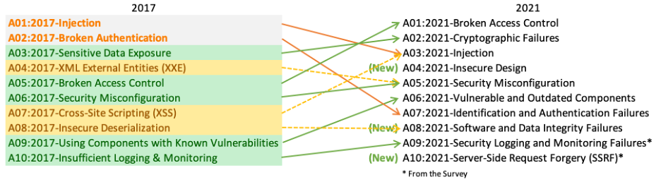

The MLSecOps Top 10 Vulnerabilities
The table below outlines the top 10 vulnerabilities for both the Open Web Application Security Project (OWASP) as well as the MLSecOps equivalent. You will be able to find a hands on set of examples to understand the "Flawed Machine Learning" cases together with solutions in the project repository.
| # |
OWASP Vulnerability |
MLSecOps Equivalent |
| 1 |
Broken Access Control |
Unrestricted Model Endpoints |
| 2 |
Cryptographic Failures |
Access to Model Artifacts |
| 3 |
Injection |
Artifact Exploit Injection |
| 4 |
Insecure Design |
Insecure ML Systems/Pipeline Design |
| 5 |
Security Misconfigurations |
Data & ML Infrastructure Misconfigurations |
| 6 |
Vulnerable & Outdated Components |
Supply Chain Vulnerabilities in ML Code |
| 7 |
Identification & Auth Failures |
IAM & RBAC Failures for ML Services |
| 8 |
Software and Data Integrity Failures |
ML Infra / ETL / CI / CD Integrity Failures |
| 9 |
Logging and Monitoring Failures |
Observability, Reproducibility & Lineage |
| 10 |
Server-side Request Forgery |
ML-Server Side Request Forgery |
If you are curious to learn more about the OWASP Top 10 you can check out the official report website. Below you can see a preview of each the report for 2017 compared to the 2021 highlights.

Check out our hands on case study where we introduce the MLSecOps Top 10 vulnerabilities through hands on examples showcasing "Flawed Machine Learning", and then providing best practices and tools that can be used to address some of these machine learning security considerations. Watch the technical video below.